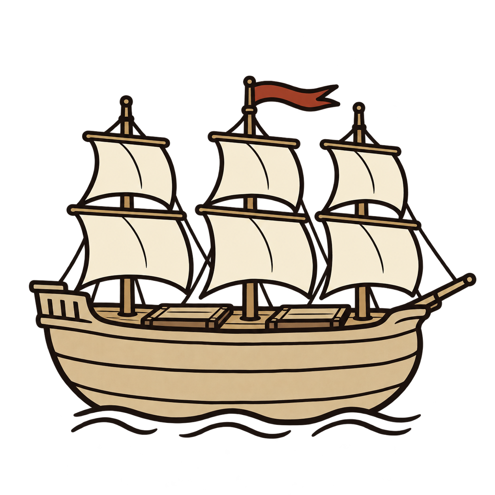
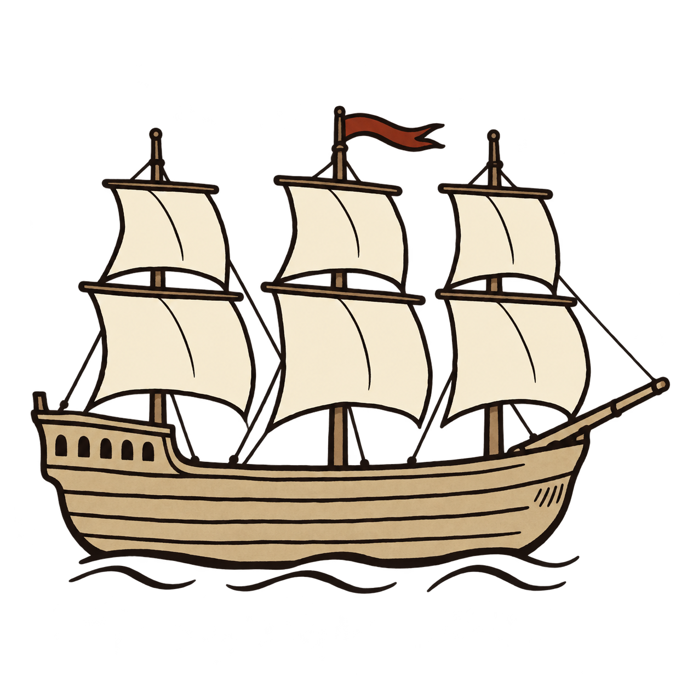
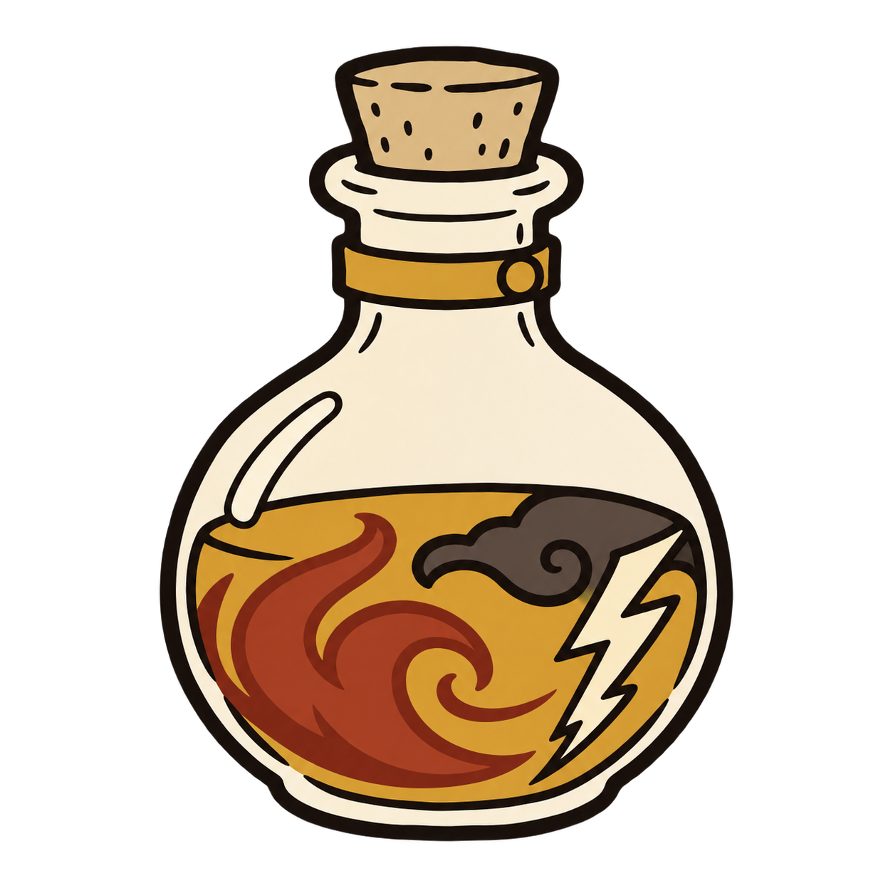
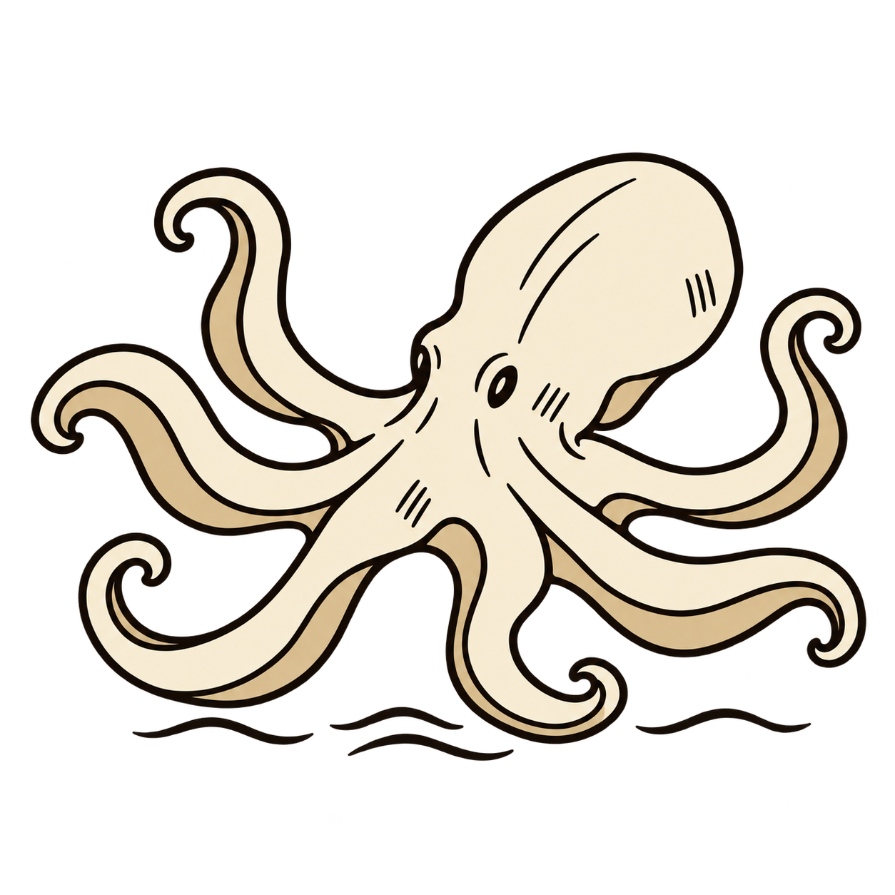
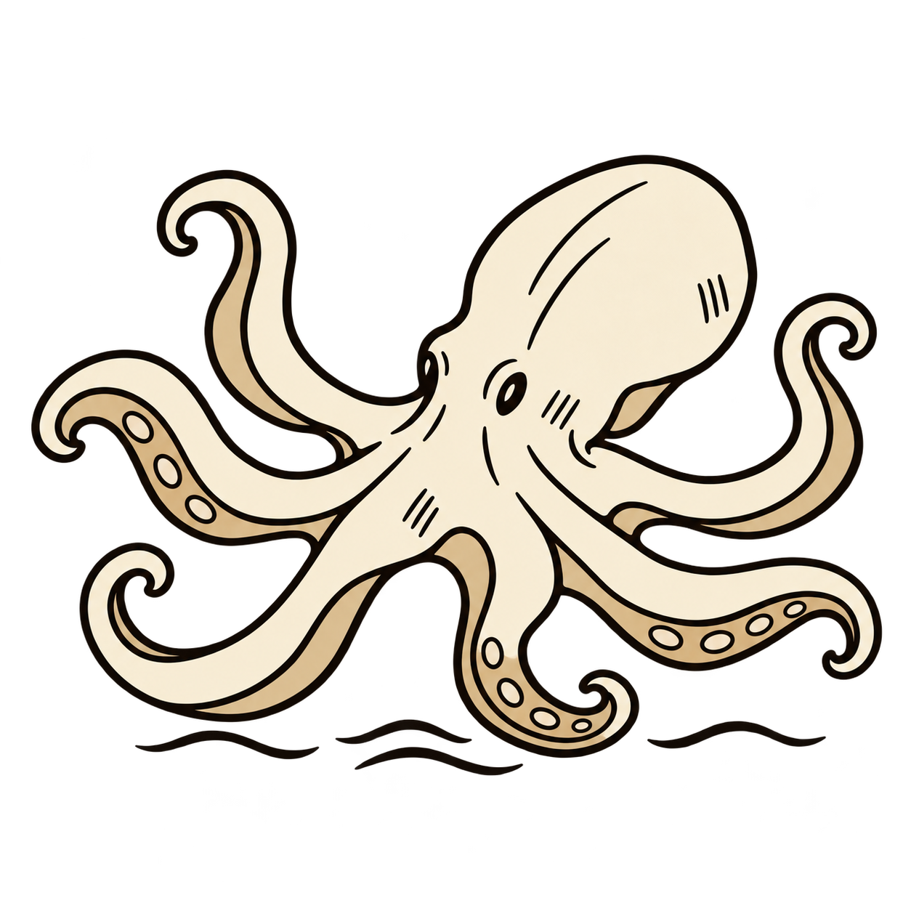
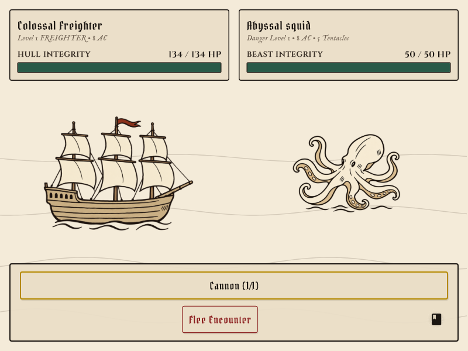

Historical review · Latest sucker placement correction
The Monstrous Sea — Current Revisions
Freighter restored, tincture made more abstract, and the rounded squid given underside suckers.
Heavy Freighter — restored
Restored the previous freighter exactly.



Unstable Tincture
Cloudy, rolling amber, rust-red and smoky currents suggest heat and unstable energy without literal fire or lightning symbols.

Rounded Squid
The rounded creature keeps its original silhouette. Sparse suction cups sit only on tan underside ribbons, with pale arm tops clear.



In-game preview

Equipment at small sizes
Each group shows 22, 36 and 48 pixels from left to right.